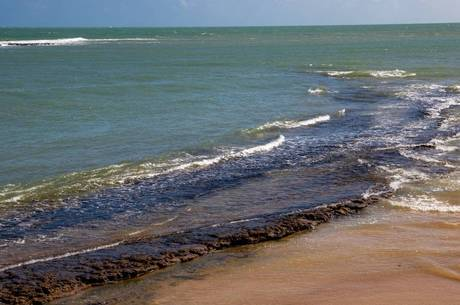

O vazamento de óleo no Brasil foi um derrame de petróleo cru que atingiu mais de 2 mil quilômetros do litoral das regiões Nordeste e Sudeste do Brasil. Os primeiros registros do derrame ocorreram no fim do mês de agosto de 2019. Até 23 de outubro, a contaminação havia atingido mais de 200 localidades de vários municípios dos nove estados da Região Nordeste. Um relatório da Marinha estimou que mais de mil toneladas de óleo haviam sido retiradas das praias nordestinas até o dia 21 de outubro. Segundo o Ministério Público Federal (MPF), trata-se do maior desastre ambiental já registrado no litoral brasileiro.
A origem do derramamento do petróleo, de tipo não produzido no Brasil, ainda é desconhecida. Em 8 de outubro de 2019, um relatório da petrolífera brasileira Petrobras apontou que a substância é uma mistura de óleos da Venezuela, o que não significa que o país seja o responsável pelo desastre.[5] O governo venezuelano rejeitou qualquer ligação com o vazamento.[6] A Marinha notificou 30 navios-tanque de dez países diferentes que passaram pelo litoral brasileiro a prestar esclarecimentos. Os culpados estão sujeitos à Lei de Crimes Ambientais.
Além do amplo impacto ambiental na cadeia alimentar, nos mangues, nos corais e na vida marinha como um todo, o que levará décadas para ser mitigado, o contato direto de humanos com o piche também pode provocar irritações e processos alérgicos, especialmente na superfície da mão, nos olhos e na boca.[8] Segundo o Ministério da Defesa, até 22 de outubro de 2019, cerca de 5.500 militares da Marinha, do Exército e da Força Aérea atuavam na limpeza das praias do Nordeste, além de servidores da Agência Nacional do Petróleo, Gás Natural e Biocombustíveis (ANP), do Instituto Brasileiro do Meio Ambiente e dos Recursos Naturais Renováveis (Ibama), do Instituto Chico Mendes de Conservação da Biodiversidade (ICMBio) e da Secretaria Nacional de Proteção e Defesa Civil, assim como milhares de voluntários
Impacto
Técnicos ambientais de Alagoas detectaram manchas de óleo na foz do Rio São Francisco, no município de Piaçabuçu, no litoral sul do estado, em monitoramento de rotina. A foz do São Francisco, maior rio inteiramente brasileiro, fica na divisa entre Alagoas e Sergipe, mas o aparecimento do óleo ficou restrito à foz, não chegando a invadir o rio, por isso, até o fim de setembro de 2019, o abastecimento da população nordestina havia sido afetado. O espalhamento de óleo ameaça tartarugas marinhas, aves e o peixe-boi-marinho, o mamífero dos oceanos com maior risco de extinção no Brasil. Segundo especialistas, o petróleo cru poderia afetar a digestão dos animais e o desenvolvimento de algas, essenciais para a cadeia alimentar dessas espécies.
Oceanógrafos, químicos e autoridades baianas avaliaram o impacto da movimentação da mancha pela costa do Nordeste após a chegada à Baía de Todos os Santos, em Salvador. Até chegar ali, o óleo já havia deixado um rastro tóxico por milhares de quilômetros e atingido os mangues e corais dessa região em uma etapa mais avançada de degradação — um tipo de contaminação que é mais difícil de ser limpa e que permanecerá durante anos no meio ambiente. O petróleo cru, ainda que seja altamente tóxico, é uma substância orgânica. Dessa forma, ele pode ser degradado através de fatores naturais, como a rebentação das ondas (que dispersam o material), a irradiação solar (que evapora determinados componentes) e até mesmo bactérias que se alimentam do carbono contido no material, mas o processo pode levar décadas.
A Marinha do Brasil informou que fragmentos do óleo que, até então, atingia apenas o litoral nordestino foram encontrados na costa da região Sudeste em 8 de novembro de 2019, na praia de Guriri, no município de São Mateus, Espírito Santo.[16]